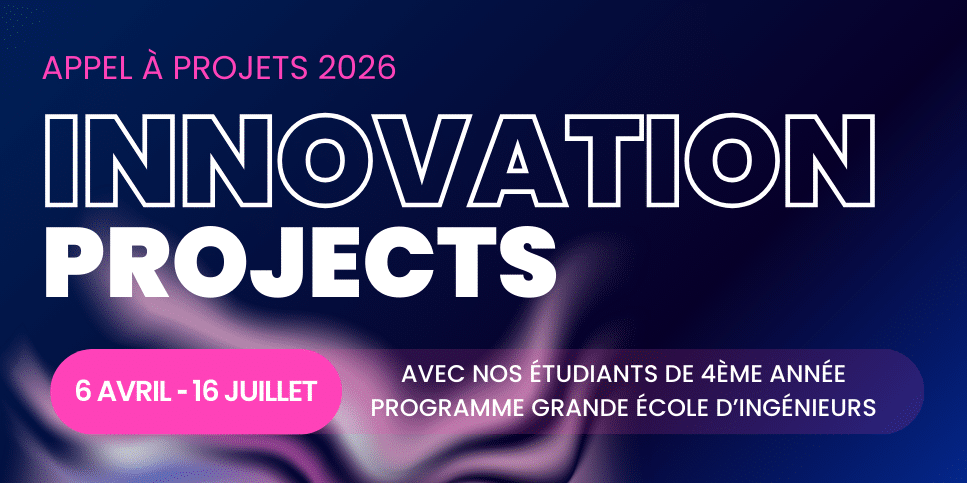
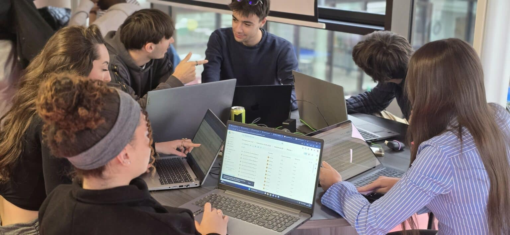
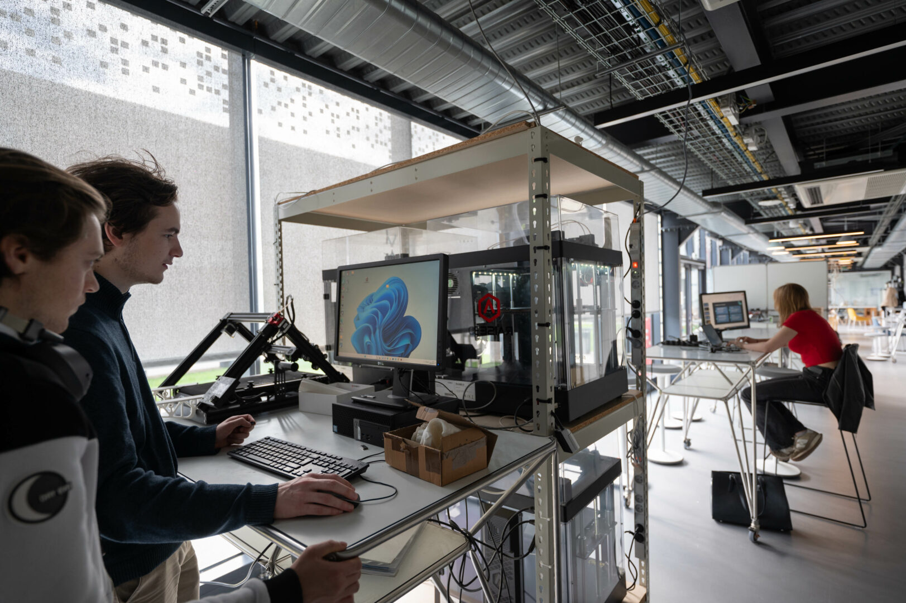

À l’EFREI, chaque idée devient code, chaque projet devient avenir
Bienvenue sur le site du département Informatique de l’EFREI. Découvrez un univers où l’innovation, la créativité et la pratique se rejoignent pour former les talents du numérique de demain.
Découvrir les formationsUn département tourné vers l’action
Le département Informatique de l’EFREI prépare les étudiants aux réalités du numérique à travers des projets concrets, des environnements de travail inspirés du monde professionnel et des expériences pédagogiques modernes.
Ici, on apprend en créant : développement web, data, cybersécurité, programmation, travail en équipe, communication technique et innovation.
Visuels du département

Créer
Des projets concrets réalisés dans des environnements proches du réel.

Collaborer
Le travail d’équipe est au cœur de l’apprentissage et de l’innovation.

Innover
Une immersion dans les technologies qui façonnent le numérique de demain.
Chiffres clés
98%
des ingénieurs diplômés étaient en activité 6 mois après la fin de leurs études
+2000
entreprises dans le réseau EFREI pour les stages, alternances et partenariats
1936
année de création de l’EFREI, école historique du numérique
Campus
Villejuif accueille une grande partie des événements, rencontres et temps forts étudiants
Actualités & événements à venir
Journées Portes Ouvertes
L’occasion de rencontrer les étudiants et les équipes, de découvrir les formations et de mieux comprendre la pédagogie du département.
Program’her
Une journée d’ateliers et d’interventions pour explorer les métiers du numérique, notamment autour de la tech et du digital.
Tech Day à Villejuif
Un événement mettant à l’honneur les projets innovants développés par les étudiants sur le campus de Villejuif.
Accès rapides
Formations
Explorer les cours, les domaines enseignés et les débouchés.
Équipe enseignante
Découvrir les enseignants et les spécialités du département.
Événements
Retrouver les temps forts, conférences et rendez-vous à venir.
Projets étudiants
Voir des exemples de réalisations concrètes menées par les étudiants.
Contact
Poser une question ou obtenir une information rapidement.
À propos
Découvrir le groupe projet et la répartition du travail.